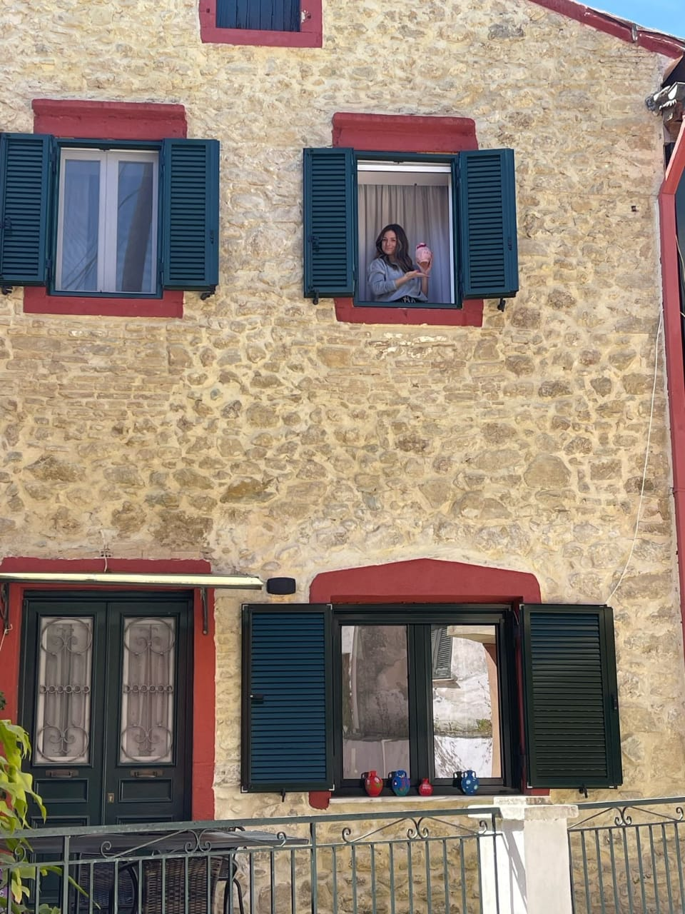
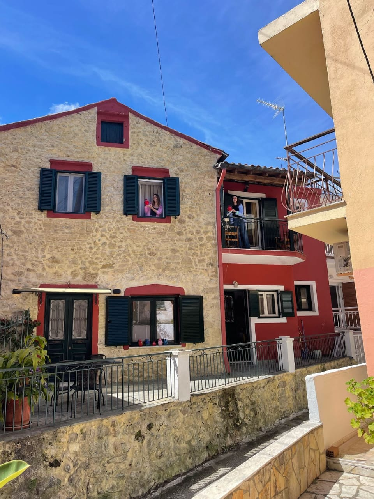
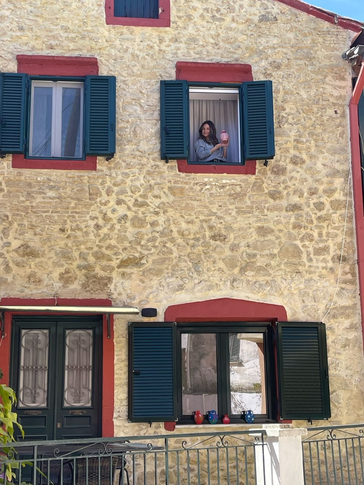
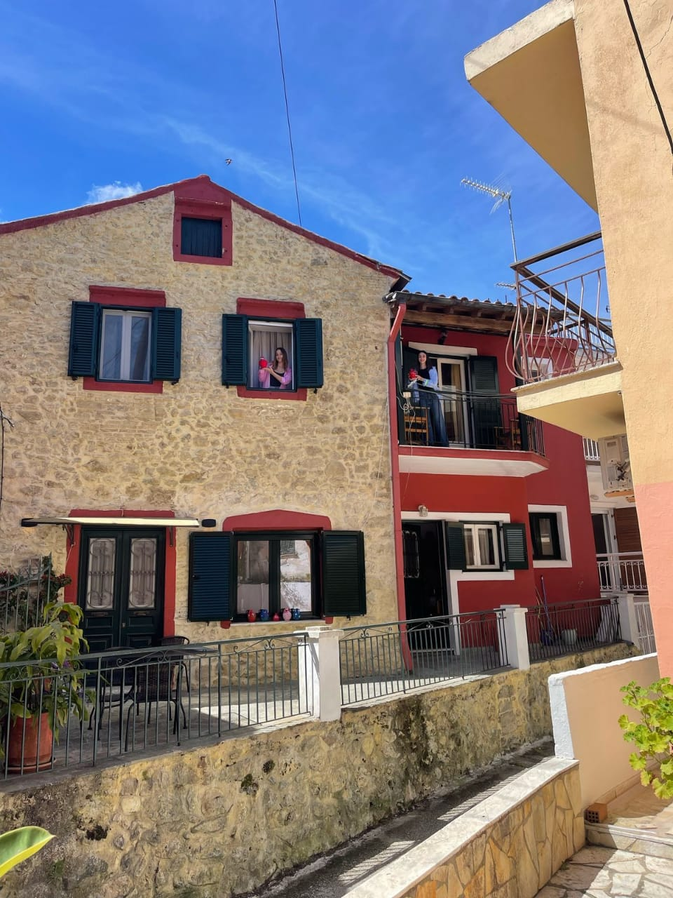

🏛️ Corfu Town
This section will include historic highlights, museums, and tips for exploring the old town.
🏘️ Benitses
Benitses is a charming seaside village just 12 km south of Corfu Town, combining tradition with modern amenities.
🍽️ Where to Eat
The village has many restaurants and tavernas serving everything from traditional Greek cuisine to Chinese and Mexican dishes.
- Pizza Kavouras – Ask for Spyros or Gregory
- Oraies Benitses – Ask for Dimitris
- Paxinos – Specializing in Fresh Fish
- Klimataria – Special Dish: Bianco
- GyrosLeague – Souvlaki to go
🗺️ Sights & Excursions
- Achilleion Palace – 4km away, go early to avoid crowds.
- Boat Tours – Explore caves and coastal treasures.
- Day trip to Erikousa Island – A true paradise!
🌙 Nightlife
The nightlife in Benitses is relaxed. Choose from seaside restaurants, small pubs, and cocktail bars. Visit:
- Ether
- Lodja
- The Marina Bar
- Angsana Hotel Bar – Top cocktails and stunning view
💡 Tips
- Locals might greet you or ask about your family — it’s part of the charm!
- Park at “Drafo”, near the basketball court (150m uphill).
- The path behind the court leads to a 4.5km hiking loop with amazing views.
- Excellent coffee available everywhere.
📷 Where to Stay




📄 Open Detailed Guide